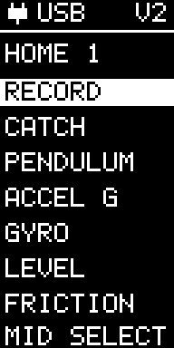

Buttons, power and versions
One layout for both versions
The full-width portrait screen has a top status row. Older yellow/blue panels show the left-hand pixels in yellow; the new panels show everything in white.
- Plug + USB: USB power is present. It does not indicate a viewer connection or charging completion.
- Battery + voltage: running on battery; voltage is rounded to one decimal place.
- V1 / V2: the detected sensor version. V2 adds the ±320 g accelerometer; both versions keep the low-g sensor and gyro.
Three buttons
Top moves up, middle selects, and bottom moves down. HOME wraps through both pages. Activity screens show their own exit/reset controls.
V2's passive piezo plays a short startup tune and button/status sounds. Sampling continues while tones play.

HOME menu order
Save a recording
Completed recordings remain in RAM while EggBert stays powered. Download and save the .egg file before erasing or switching off. Gentle Catch, Level, Gyro, Pendulum and Friction show live/results data rather than a downloadable five-second capture.